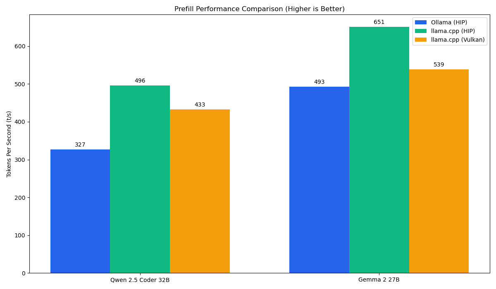
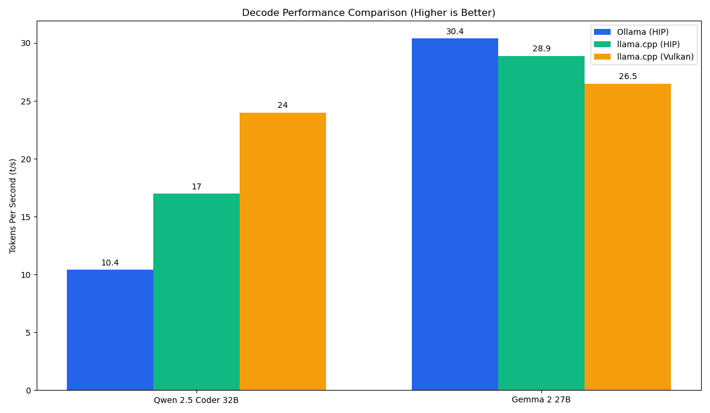

Comparative Benchmarks (May 2026)
Testing methodology involved 3-run averages using 1k context windows on the Dual RX 7800 XT rig.
Prefill (Ingestion)

Decode (Generation)

Backend Efficiency Results
- HIP/ROCm: Best for high-prefill tasks (batch processing).
- Vulkan (RADV): 47% faster than HIP for token generation on Qwen models.
- Ollama: Most balanced for general usage and Gemma-optimized models.